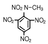
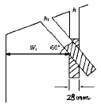
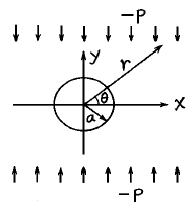
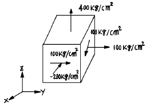
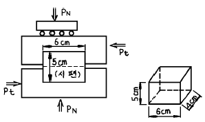
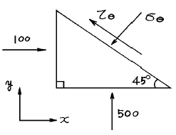
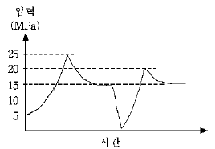

화약류관리기사 (2004-05-23 기출문제)
1과목: 일반화약학
1. 도트릿쉬(dautriche)법에 의해 함수폭약의 폭속을 측정하였을 때의 폭속은? (단, 표준 도폭선의 폭속 5600m/sec, 도폭선의 중심과 폭발 흔적간의 거리(x)는 8㎝이고, 폭약 2점간의 거리는 10cm이다.)
- 4200m/sec
- 4000m/sec
- 3700m/sec
- 3500m/sec
(정답률: 82%)

2. 화약을 사용시에는 사고예방과 관련하여 정전기에 대해 고려하여야 한다. 다음 중 정전기에 대한 유해예방이 가장 필요한 것은?
- 다이너마이트
- 건면약
- TNT(Trinitrotoluene)
- 공업뇌관
(정답률: 84%)
3. 공업용 뇌관 또는 전기뇌관에 대한 옳은 설명은?
- 기폭약으로 사용하는 뇌홍폭분은 뇌홍 약 60%, 염소산칼륨 약 40% 혼합물이다.
- 전기뇌관 점화 시 0.01A 의 전류로서 충분하다.
- 첨장약으로는 테트릴, 헥소겐 등을 사용한다.
- 지발 전기뇌관은 폭발의 초시간격 1/1,000 초부터 여러가지가 있다
(정답률: 73%)
4. 다음 폭약중 성질상 수질공에 사용할 수 있는 것은?
- 흑색 화약
- 과염소산 폭약
- 질산암모늄 폭약
- 헥소겐
(정답률: 50%)
5. 다음 중 화약류가 폭발하여 최대의 압력을 나타낼 때 까지의 시간차를 무엇이라 하는가?
- 감도
- 맹도
- 순폭도
- 폭속
(정답률: 84%)
6. 다음 물질의 명칭은?

- 메틸니트로트리니트로 벤졸
- 테트라니트로메틸아닐린
- 트리니트로톨루엔
- 트리니트로피크린산
(정답률: 알수없음)
7. 무연화약과 흑색화약의 장단점 비교로서 옳지 않은 것은?
- 무연화약은 위력이 강하다.
- 무연화약은 저장 안정성이 떨어진다.
- 무연화약은 점화하기 힘들다.
- 무연화약은 저가이다.
(정답률: 70%)
8. 다이너마이트 제조 시 원료와 용도에 대한 설명으로 옳지 않은 것은?
- 주원료는 니트로글리세린, 니트로글리콜, 니트로셀룰로오스이다.
- 산화제로는 질산칼륨, 질산나트륨을 사용한다.
- 가연물로는 목분, 전분을 사용한다.
- 감열 소염제로는 요소, 염화나트륨을 사용한다.
(정답률: 알수없음)
9. 젤라틴 다이너마이트의 내수성을 보완하기 위해 사용되는 물질은?
- Na2SO4
- H2SO4
- HNO3
- BaSO4
(정답률: 72%)
10. 교질다이너마이트 제조시 날화(kneading)공정에 미치는 영향이 가장 적은 것은?
- 기온
- 습도
- 혼화제 온도
- 압력
(정답률: 알수없음)
11. 니트로글리세린에 대한 설명으로 옳지 않은 것은?
- 침투력이 강하고 가열하면 분해한다.
- 유상(油狀)의 액체로 손으로 직접 취급하면 두통 발열 등의 중독증을 일으킨다.
- 동결하면 민감하고 동결 전후에 위험하다.
- 충격마찰에 둔감하므로 액체 운반이나 단독 운반이 가능하다.
(정답률: 알수없음)
12. 화약의 불발 원인이 될 수 없는 것은?
- 약경이 아주 클 때
- 폭파 순서가 적합하지 못할 때
- 장약법이 나빴을 때
- 폭약의 습화
(정답률: 80%)
13. 면약을 교화시키는 교화제로 쓰이지 않는 것은?
- 알콜혼합액
- 아세톤
- 니트로글리세린
- 질산암모늄
(정답률: 74%)
14. 40% 다이너마이트 (약경 32mm, 약량 125g)순폭시험 결과 8 이였다. 얼마 후 다시 시험하였더니 순폭거리가 192mm이상이었다. 순폭도는 얼마 감소하였는가?
- 2
- 4
- 6
- 8
(정답률: 알수없음)
15. 다음 중 기폭제(약)은?
- D.D.N.P
- R.D.X
- P.E.T.N
- D.N.N
(정답률: 알수없음)
16. 다음 중 화약류의 충격감도 시험에서 임계폭점이란?
- 100% 폭발할 수 있는 높이 중 최소값
- 폭발되지 않는 높이 중 최고값
- 시료중 50%가 폭발하는 값
- 100% 폭발되는 최고값
(정답률: 85%)
17. 교질 다이너마이트가 동결하면 어떤 현상이 생기는가?
- 니트로글리세린이 침출되어 위험하다.
- 니트로글리콜이 침출되어 위험하다.
- 가소성이 없어져 마찰 및 충격에 대하여 완충성이 없어져 위험하다.
- 안전성이 저하하여 자연분해 하므로 위험하다.
(정답률: 73%)
18. 내정전기뇌관은 어떤 조건(콘덴서의 용량, 방전전압)의 정전기에서 기폭되지 않아야 하는가?
- 500pF, 25kV
- 500pF, 20kV
- 2000pF, 8kV
- 2000pF, 10kV
(정답률: 75%)
19. 화약류의 취급 및 보관방법으로 옳지 않은 것은?
- 테트릴은 종이상자에 보관한다.
- TNT는 나무상자에 보관한다.
- 니트로글리세린은 구리제용기에 보관한다.
- 피크린산은 철제용기에 보관한다.
(정답률: 알수없음)
20. 가열시험에서 시험기의 온도를 75℃로 유지하고 48시간 가열하여 감량이 얼마 이하의 것을 합격품이라 하는가?
- 1/100
- 2/100
- 3/100
- 5/ 100
(정답률: 70%)
2과목: 발파공학
21. 분산장약(deck charge)에 관한 설명 중 틀린 것은?
- 주상장약(column charge)의 기폭시간을 달리하므로써 진동을 감소시킨다.
- 분할장약들 사이의 전색장은 천공경에 비례한다.
- 습윤된 발파공의 삽입전색장은 건조한 발파공의 0.5배로 한다.
- 기폭순서는 상부자유면에서 가까운 폭약부터 기폭한다.
(정답률: 0%)
22. 발파력 P = SWK1 + G sin α 에서 G sin α 는 무엇을 의미하는가? (단, S:절단면의 주변길이, W:전단저항선, K1:전단계수, G:파괴암석의 중량)
- 응집저항
- 파괴암석의 이동력
- 폭약의 비중
- 암석의 강도
(정답률: 8%)
23. 다음 중 심빼기 발파에 대한 설명으로 틀린 것은?
- 평행공 심빼기는 소결현상을 방지하기 위하여 장약량을 균일하게 장약공의 입구까지 장약한다.
- 자유면을 증가시킬 목적으로 실시한다.
- 심빼기의 위치는 터널막장 어느 장소에도 위치될 수 있다.
- 경사공 심빼기는 자유면에 대하여 통상 60~70° 의 경사를 가지며, 공저에 폭약을 될수록 저밀도로 장약하여 발파하는 방법이다.
(정답률: 알수없음)
24. 공경이 28mm인 h공을 폭발하여 약실내에 작용하는 압력을 3000kg/cm2 이라고 하면 저항선과 직교하는 h공과 저항선에 대하여 60° 를 이루는 h1 공에 대한 전압력의 차는? (단, 장약길이는 공경의 10배로 한다.)

- 31510.83kg
- 31520.83kg
- 31530.83kg
- 31540.83kg
(정답률: 알수없음)
25. 심발공의 저항선 1.5m, 저항선과 이루는 확대 발파공의 신자유면에 대한 저항선 0.6m일 때 소요 심발 공수는 얼마인가? (단, cosec b = 4.81이다.)
- 2
- 4
- 6
- 8
(정답률: 10%)
26. 직교하는 2자유면 발파에서 공경 30mm, 최소 저항선 1.2m, 장약량을 750gr로 하였더니 표준발파가 되었다. 실제발파에서 최소 저항선을 3배로 증가시켰다면 장약량은 몇 kg로 하여야 하는가?
- 1.50
- 2.25
- 6.00
- 20.25
(정답률: 알수없음)
27. 다음 설명 중 맞는 것은?
- 일반적으로 자유면이 많으면 발파효과는 양호하다.
- 고화된 다이나마이트는 그대로 사용하면 된다.
- 동결된 폭약은 나무다짐대로 장전한다.
- 전색물로는 장전한 폭약에 온기를 피하기 위하여 건조한 종이나 짚으로 압진한다.
(정답률: 20%)
28. 수직벤치 높이 10m, 공저깊이(sub-drilling) 1m, 최소저항선 3m, 공간격 4m의 직사각형 패턴으로 천공하여 길이 24m, 폭 12m, 높이 10m를 절취하려고 한다. 공당 장약량이 30kg 이라면 이 패턴에 대한 비장약량(kg/m3)은?
- 0.125
- 0.292
- 0.375
- 0.624
(정답률: 30%)
29. 도화선에 점화작업을 할 때에는 다음 각 항목의 규정에 유의해야 한다. 틀린 것은?
- 발파시계를 작동시키거나 측정용 안전도화선에 점화하여야 한다.
- 점화신호에 따라서 확실하게 점화하여야 한다.
- 1인 점화갯수는 도화선길이가 1.5m이상일 때에는 10발이내이다.
- 도화선길이가 0.5m 미만일 때에는 1인 점화갯수는 3발이다.
(정답률: 10%)
30. 심발발파에서 최소저항선이 1.5m이며, 발파계수 C가 0.33일 경우 심발공에 필요한 다이나마이트(112.5 gr)수는? (단, 표준발파가 되었다고 가정한다.)
- 3개
- 5개
- 10개
- 12개
(정답률: 알수없음)
31. 발파진동의 일반적인 특성에 대한 설명 중 올바른 것은?
- 발파에 의해 발생하는 파들은 압축파, 전단파, 표면파로 나눌 수 있다.
- 종방향 성분 L은 보통 수직이고 폭원으로부터 반경방향이다.
- 물체파는 레일리파로 가장 중요하며 전달거리가 멀어질 때도 측정이 가능하다.
- 짧은 거리에서의 발파는 주로 표면파를 만든다.
(정답률: 19%)
32. 비전기식 뇌관에 대한 설명 중 옳지 못한 것은?
- 단발전기뇌관과 도폭선 시스템 장점을 택하여 조합한 형식이다.
- 뇌관 내부에 연시장치를 가지고 있으며 양호한 초시 정밀도로 단발발파를 할 수 있다.
- 무한단수를 얻을 수 있다.
- 결선작업이 복잡하고, 작업능률이 떨어진다.
(정답률: 알수없음)
33. 다수의 전기뇌관을 병렬로 결선하여 제발발파시킬 때 그 중 한 개의 전기뇌관 내의 백금선교가 절단되었으면 어떻게 되는가?
- 그 뇌관만 불발된다.
- 그 뇌관 이후의 한쪽만 불발된다.
- 그 뇌관 전후 약간씩이 불발된다.
- 전체가 불발된다.
(정답률: 알수없음)
34. 발파를 위한 천공작업을 할 때에는 다음 규정을 준수해야한다. 틀린 것은?
- 폭파되지 않은 화약의 유무를 세밀히 조사한 후에 천공한다.
- 전회에 천공한 공구에 재차 천공하는 것이 좋다.
- 천공작업과 장전작업은 동일지역에서 병행해서는 안된다.
- 불발된 장전구멍에서부터 15미터이내에서는 동력기계(소형 브레이커, 씽커 등)를 이용한 천공작업을 해서는 안된다.
(정답률: 알수없음)
35. 다음 충격하중에 대한 설명 중 가장 거리가 먼 것은?
- 충격하중이란 하중이 거의 순간적으로 극히 높은 유한치로 급히 상승하였다가 그후 급속히 감소된다.
- 충격하중하에서 물체내에 현저한 응력의 균일성을 줄수 있다.
- 충격하중에 의해 물체내에 유발된 응력분포는 일반적으로 과도적이며 극히 국한된다.
- 충격하중을 받는 물체는 동적양상을 지니며, 그로 인해 물체에 운동을 일으킨다.
(정답률: 0%)
36. 터널발파시 최외곽공의 좋은 결과를 얻기 위해서는 천공의 정밀도가 매우 중요하다. 터널의 계획된 규격을 유지하고, 다음 천공을 위한 공간을 확보하기 위하여 천공끝이 바깥쪽으로 나가게 실시해야 된다. 이러한 look out (확천량)의 제안된 값은?
- 1m당 1cm
- 1m당 3cm
- 1m당 6cm
- 1m당 10cm
(정답률: 0%)
37. 물을 전색물로 사용시 장점으로 타당하지 않은 것은?
- 가연성 가스에 대한 안전도의 증대
- 황 광산에서 황의 발화성 증대
- 발생 암분의 억제
- 탄진 및 가연성 가스에 대한 착화방지
(정답률: 10%)
38. 균열들이 평행하고 균열표면이 매끈한 평면배열의 암반에서 균열에 평행한 방향으로 결정짓는 투수계수를 등가투수계수라 한다. 틈새의 간극이 0.01cm, 균열간의 간격이 1.3cm, 동점성계수가 0.0101cm2/sec라고 할 때 등가투수계수(cm/sec)는 얼마인가?
- 0.0⑤
- 0.006
- 0.5
- 0.66
(정답률: 알수없음)
39. Stage 발파공법에 대한 설명 중 틀린 것은?
- 수직갱 굴착공법의 일종으로 30∼40 m의 장공을 이용하여 하부에서 절상 굴착하는 발파공법이다.
- 상부갱도에서 장약하여 하부에서 분할절상함으로써 절상되는 갱도내에 작업원이 들어가지 않으므로 안전성이 높다.
- 장공 절상 crater cut은 하향 1 자유면 발파가 기본이다.
- 장공 절상 crater cut의 심빼기부는 통상 5개 발파공을 중심으로 발파되며 장약위치는 기폭순서에 관계없이 동일한 높이로 한다.
(정답률: 7%)
40. 폭풍압의 특성에 대한 설명으로 가장 올바른 것은?
- 폭풍압은 건물내에 있는 사람에게 더 큰 영향을 미친다.
- 노천 채석장 발파시 발생하는 폭풍압 주파수는 40Hz이상의 고주파가 우세하다.
- 고주파 폭풍압은 주로 구조물에 피해를 준다.
- 폭풍압은 청명한 날씨 뒤 심한 안개가 낀날 낮게 나타난다.
(정답률: 15%)
3과목: 암석역학
41. 다음 중 중간 주응력을 고려한 암석의 파괴기준이 아닌 것은?
- Nadai 이론
- Von Mises 이론
- Huber-Hencky 이론
- Griffith 이론
(정답률: 10%)
42. 초기지압 측정법 중 응력개방법에 해당되는 것은?
- Cylinder Jack법
- Flat Jack법
- 수압파쇄법
- 공경변형법
(정답률: 알수없음)
43. Griffith의 파괴 이론에 따르면 암석의 전단강도는 인장강도의 몇 배인가?
- 1배
- 2배
- 3배
- 4배
(정답률: 알수없음)
44. 도면과 같이 무한판(無限板)중심에 반경 a의 원형공을 만들고, y방향으로만 - p (압축)의 응력을 작용 시켰을 때 x축상의 공벽에서 접선 방향의 응력은?

- - P
- - 2P
- - 3P
- - 4P
(정답률: 알수없음)
45. 평사투영법(stereographic projection)에 의해 불연속면들의 극점(pole)을 분석한 결과, 사면의 경사방향과 같은 방향으로 한 곳에 극점이 집중적으로 분포하였다. 이 지역에서 예상되는 사면파괴는 어떠한 파괴인가?
- 평면파괴
- 쐐기파괴
- 원호파괴
- 전도파괴
(정답률: 0%)
46. 터널설계와 관련한 암반의 Q분류법 9등급 중에서 가장 불량한 두번째 등급(Extremely Poor)의 범위를 Q 값으로 표현하면 어떤 크기인가?
- 0.01 ~ 0.1점
- 0.001 ~ 0.01점
- 0.1 ~ 1점
- 1 ~ 4점
(정답률: 알수없음)
47. 최대주응력(σ1)의 값이 1500kg/cm2이고 최소주응력(σ3)이 1000kg/cm2일 때 읨가 45° 인면에서 전단응력 (τ)의 값은 얼마인가?
- 150kg/cm2
- 200kg/cm2
- 250kg/cm2
- 1250kg/cm2
(정답률: 17%)
48. 암석 시험편에 대하여 압축의 전과정 응력-변형율 곡선(stress-strain curve)을 얻는데 있어서 시험편의 취성도 와의 관계는? (단, 강성 압축시험기를 사용한다.)
- 취성도가 클수록 용이하다.
- 취성도가 클수록 어렵다.
- 취성도와는 관계가 없다.
- 시험기의 강성도에는 관계가 없고 시험편의 취성도에만 관계가 있다.
(정답률: 알수없음)
49. 다음 중 암반의 강도와 변형특성을 측정하기 위하여 적용되는 시험방법이 아닌 것은?
- 평판재하시험
- 공내재하시험
- 원위치 전단시험
- Lugeon 시험
(정답률: 9%)
50. 다음 중 암석의 인장강도 측정법으로 적합하지 않는 것은?
- Indentation Test
- Point Load Test
- Bending Test
- Impact Test
(정답률: 알수없음)
51. 지하암반에 건설되는 다음 시설들 중에서 공동 상부에 수장막(water curtain) 터널이 설치되는 경우가 있는 것은?
- 지하 식품저장소
- 지하수 양수발전소
- 지하 핵폐기물 처분시설
- 지하 액화가스 저장시설
(정답률: 알수없음)
52. 다음 그림과 같은 응력상태에서 최대 전단응력(maximum shear stress)은 대략 얼마정도인가?

- 100 kg/cm2
- 135 kg/cm2
- 180 kg/cm2
- 315 kg/cm2
(정답률: 19%)
53. 변형과 힘에 관한 기본적인 법칙에 완전히 따르는 가상의 물체를 이상물체(ideal body)라고 하는데 이와 같은 이상 물체에 관한 다음 설명 중 틀린 것은?
- Newton 유체는 일정한 힘에 대해 일정한 속도로 유동하게 되며 그 관계는 직선으로 나타난다.
- 외력의 제거와 동시에 변형이 완전히 소실되는 것을 완전 탄성이라 한다.
- Hooke 고체에서 변형률과 응력은 일정한 비례 관계로 표현된다.
- 완전 소성체의 모형은 대쉬포트(dashpot)로 나타낼 수 있다.
(정답률: 10%)
54. 석회암 시험편에 만능시험기를 사용하여 압열인장시험(Brazilian test)을 한 결과 파괴하중이 180kg 이었다. 이때 석회암의 인장강도는 얼마인가? (단, 시험편의 직경(d) = 3cm, 시험편의 길이(L) = 1.5cm)
- 1.5kg/cm2
- 18.5kg/cm2
- 25.5kg/cm2
- 32.5kg/cm2
(정답률: 16%)
55. 수평지표면에 채굴 공동에 의한 침하현상 중 지표의 수평이동량이 가장 크게 일어나는 곳은?
- 침하분지의 중심
- 침하가 시작되는 침하분지의 맨바깥 가장자리
- 침하분지의 중심과 가장자리와의 중간쯤되는 부분
- 침하분지 내의 위치와는 직접적인 관계가 없다.
(정답률: 알수없음)
56. 암석의 파괴이론중에서 물체내 임의 점에서의 3개의 주응력을 직교좌표축으로 하는 좌표계에서 이 점을 둘러싸는 8면체에 작용하는 전단응력, 즉 8면체 전단응력이 일정치에 도달하면 물체가 파괴된다는 이론은?
- Griffith 이론
- Mohr-Coulomb 이론
- Nadai 이론
- Von Mises 이론
(정답률: 알수없음)
57. 폭(W) 5.3cm, 직경(D) 4.5cm인 불규칙암괴에 대하여 점하중강도시험을 수행하였다. 점하중시험결과 320kg에서 파괴되었다면 점하중지수(Point load Index, kg/cm2)는 얼마인가?
- 9.5
- 10.5
- 11.5
- 12.5
(정답률: 알수없음)
58. Poisson 비(比)에 대한 설명중 맞지 않는 것은?
- Poisson 비가 0이면 어느 방향이든 변화가 없다.
- Poisson 비는 무명수로서 암석은 0.1-0.3 정도이다.
- Poisson 비의 역수를 Poisson 수라 한다.
- Cork는 Poisson 비가 0에 가깝기 때문에 축과 직각인 방향에는 변형율이 일어나지 않는다.
(정답률: 알수없음)
59. 다음과 같은 일면전단시험을 하였다. 이때 전단강도는? (단, Pt = 5000㎏ 시료의 크기 : 높이 5㎝× 가로 6㎝×세로 4㎝)

- 250 ㎏/cm2
- 208.3 ㎏/cm2
- 166.7 ㎏/cm2
- 41.7 ㎏/cm2
(정답률: 알수없음)
60. 그림과 같이 σx = 100, σy = 500, τ xy = 0 가 작용하는 2차원 평면에서 45° 면상에 작용하는 법선 응력 σθ 의크기는?

- 300
- 400
- 424
- 600
(정답률: 30%)
4과목: 화약류 안전관리 관계 법규
61. 폭약과 비슷한 파괴적 폭발에 사용될 수 있는 것으로서 대통령령이 정하는 것 중 디아조디니트로페놀 또는 무수 규산을 몇 % 이상을 함유해야 하는가?
- 25
- 30
- 50
- 75
(정답률: 9%)
62. 화약류관리보안책임자의 주소지가 변경되었을 때 할 일은?
- 동사무소에서 15일 이내에 전입신고만 하면 된다.
- 30일 이내에 주소지 관할 경찰서에 신고해야 한다.
- 화약류관리보안책임자면허는 지방경찰청장의 허가사항이므로 주소지 관할 지방경찰청에 30일이내에 신고해야 한다.
- 20일 이내에 주소지 관할 지방경찰청에 신고해야 한다.
(정답률: 알수없음)
63. 화약류관리보안책임자가 행할 수 있는 일과 가장 거리가 먼 것은?
- 발파현장의 작업 보조자를 정한다.
- 발파시 경계업무를 수행한다.
- 천공방법을 지시한다.
- 약실에 대한 화약류의 장전방법을 지시한다.
(정답률: 19%)
64. 화약류의 운반신고를 하지 아니하거나 거짓으로 신고한 사람의 처벌중 맞는 것은?
- 5년이하의 징역
- 3년이하의 징역
- 700만원 이하의 벌금형
- 500만원 이하의 벌금형
(정답률: 15%)
65. 화약류저장소에 흙둑을 설치하고자 한다. 다음 설명 중 틀린 것은?
- 저장소 바깥쪽 벽으로부터 흙둑 안쪽 벽 밑까지의 거리는 1m이상 2m이내
- 2개이상의 저장소가 인접하여 중간의 흙둑을 같이 사용할 때는 그 흙둑에 통로를 설치할 것
- 흙둑을 부득이 흙담으로 하는 경우 흙담의 높이는 흙둑 높이의 1/3이하
- 흙둑의 경사와 정상의 폭(너비)은 45虔이하와 1m 이상
(정답률: 알수없음)
66. 화약류 사용자가 허가를 받아야 할 관서는?
- 주소지를 관할하는 경찰청장
- 사용지를 관할하는 경찰청장
- 주소지를 관할하는 경청서장
- 사용지를 관할하는 경찰서장
(정답률: 25%)
67. 화약류를 취급할 수 없는 자와 관계 없는 사항은?
- 파산자로써 복권되지 아니한 사람
- 금고이상의 형의 집행유예선고를 받고 집행유예기간이 끝난 날로부터 366일이 지난 사람
- 금고이상의 형의 선고를 받고 집행을 받지 아니하기로 확정된 후 732일이 지난 사람
- 화약류와 관련된 허가를 옳지 못한 방법으로 받아 허가취소처분을 받고 6월 이상 지난 사람
(정답률: 0%)
68. 화약류 제조에 관한 시설 및 기술의 기준은 무엇으로 정하는가?
- 행정자치부령
- 대통령령
- 국무총리령
- 경찰청령
(정답률: 알수없음)
69. 화약류 취급에 관한 설명 중 잘못된 것은?
- 사용에 적합하지 아니한 화약류는 화약류 저장소에 반납할 것
- 얼어서 굳어진 다이너마이트는 손으로 주물러서 부드럽게 할 것
- 낙뢰의 위험이 있을 때는 전기도화선 사용을 금할 것
- 화약, 폭약과 화공품은 각각 다른 용기에 넣어 취급 할 것
(정답률: 22%)
70. 초유폭약에 의한 발파의 기술상 기준 설명 내용중 잘못된 것은?
- 기폭량에 적합한 전폭약을 같이 사용할 것
- 발파장소에서는 발파가 끝난 후 발생하는 가스에 주의할 것
- 뇌관이 달린 폭약은 장전용 호스로 조심스럽게 장전 할 것
- 가연성 가스가 0.5% 이상이 되는 장소에서는 발파하지 아니할 것
(정답률: 알수없음)
71. 꽃불류 저장소 주위의 방폭벽 두께는 몇 ㎝이상의 보강콘크리트블록조로 설치 하여야 하는가?
- 10㎝
- 15㎝
- 20㎝
- 25㎝
(정답률: 알수없음)
72. 화약류 취급소를 설치하지 않고 사용했을 경우 행정처분 기준은? (단, 2회이상 위반)
- 취소
- 6월 효력정지
- 3월 효력정지
- 1월 효력정지
(정답률: 10%)
73. 운반신고를 하지 아니 하고도 운반할 수 있는 화약류의 종류 및 수량으로 맞는 것은?
- 총용뇌관 20만개
- 도폭선 1500m
- 화약 2㎏
- 폭발천공기 1000개
(정답률: 10%)
74. 경찰서장의 허가를 받아야 하는 화약류 저장소는?
- 간이 저장소
- 수중 저장소
- 도화선 저장소
- 꽃불류 저장소
(정답률: 10%)
75. 사용허가를 받지 아니하고 화약류를 사용할 수 있는 사람으로서 건축, 토목공사용으로 1일 동일한 장소에서 사용 할 수 있는 수량은?
- 산업용 실탄 200개 이하
- 미진동 파쇄기 1500개 이하
- 광쇄기 200개 이하
- 건설용 타정총용 공포탄 5000개 이하
(정답률: 알수없음)
76. 화약류저장소외의 장소에 저장할 수 있는 화약류의 수량으로 적합한 것은? (단, 판매업자가 판매를 위하여 저장하는 경우)
- 화약 100kg
- 장난감용 꽃불류 25kg
- 도폭선 500m
- 미진동 파쇄기 40개
(정답률: 알수없음)
77. 수중저장소에 저장할 수 있는 화약류에 속하는 것은?
- 도폭선
- 꽃불류 원료용화약
- 신호염관
- 무연화약
(정답률: 알수없음)
78. 화약류 1급 저장소에는 화약류를 저장할 수 있는 일정한 저장량의 한도가 있다. 총용뇌관은 몇 개까지 저장할 수 있는가? (단, 부득이한 사유로 허가관청의 허가를 받는 경우를 제외한다. 저장량은 최대저장량임)
- 5000만개
- 3000만개
- 1000만개
- 500만개
(정답률: 알수없음)
79. 화약류저장소와 보안물건간의 보안거리중 화약류1급저장소에 폭약 40톤을 저장 하려면 관련 법령상 최소한 몇 m 이상의 거리를 두어야 하는가? (단, 보안물건은 고압전선이다.)
- 520m
- 440m
- 260m
- 170m
(정답률: 10%)
80. 화약류를 운반하는 사람은 발송지(發送地)를 관할하는 경찰서장에게 신고한 다음 화약류 운반신고(申告畢證)필증을 교부받아 이를 지니고 있어야 된다. 이 신고필증을 지니지 아니한 때에는 다음과 같은 벌을 받게 된다. 맞는 것은?
- 500만원 이하의 과태료
- 300만원 이하의 과태료
- 300만원 이하의 벌금형
- 500만원 이하의 벌금형
(정답률: 알수없음)
5과목: 굴착공학
81. 직경 5m의 원형터널 내벽에 두께 4cm의 숏크리트(shotcrete)를 타설할 경우 이 숏크리트가 발휘할 수 있는 최대 지보압(maximum support pressure)은? (단, 숏크리트의 압축강도 = 30 MPa)
- 0.48 MPa
- 0.36 MPa
- 0.24 MPa
- 0.12 MPa
(정답률: 알수없음)
82. 터널굴착 시 현장에서 팽창성 암석으로 볼 수 없는 것은?
- 사문암
- 응회암
- 화강암
- 이암
(정답률: 알수없음)
83. 다음 중 물빼기 공법의 종류가 아닌 것은?
- 물빼기 시추
- 딥 웰(deep well)
- 웰포인트(well point)
- 압기공법
(정답률: 알수없음)
84. 흙의 통일분류법(Unified Soil Classification System)에서 사용되는 주기호가 아닌 것은?
- G: 자갈
- S: 모래
- M: 실트
- F: 세립토
(정답률: 10%)
85. 경사방위가 240° 이고 경사가 30° 인 암반사면을 주향과 경사로 맞게 표현한 것은?
- N30W, 30SW
- N60E, 30NW
- N30W, 30NE
- N60E, 30SE
(정답률: 알수없음)
86. 다음 중에서 지하공간의 특징이 아닌 것은?
- 단열성
- 차광성
- 기밀성
- 변온성
(정답률: 알수없음)
87. 다음의 액성한계(LL)와 소성지수(PI)의 공학적 의의를 설명한 것으로 가장 올바르지 못한 것은?
- LL과 PI 값이 크면 점토와 콜로이드 크기의 입자 함량이 많다.
- LL과 PI 값이 크면 다짐이 잘 되므로 도로의 기층이나 노반재료로 적당하다.
- LL과 PI 값이 큰 흙은 약한 지반이므로 기초에 적합하지 않다.
- LL과 PI 값이 큰 흙은 함수량에 따라 체적변화가 발생하기 쉽다.
(정답률: 30%)
88. 현장에서 수압파쇄시험을 통하여 다음과 같은 결과를 얻었을 때 최대수평응력의 크기는 몇 MPa인가?

- 10
- 15
- 20
- 25
(정답률: 알수없음)
89. 숏크리트(shortcrete)의 작용효과 중 강아치 지보공 또는 록볼트에 토압을 전달하는 판으로서 거동하는 효과는?
- 전단력에 의한 저항효과
- 피복효과
- 약측보강효과
- 암반하중의 배분효과
(정답률: 8%)
90. 암반의 공학적 분류 방법 중 RSR(Rock Structure Rating)에서 사용하는 기본 변수가 아닌 것은?
- 암반의 응력(rock stress)
- 지질 및 암반구조(rock structure)
- 불연속면의 형태(discontinuity pattern)
- 지하수(groundwater flow)
(정답률: 10%)
91. 다음 설명 중 가장 올바른 것은?
- 지하공동의 곡율반경이 클수록 압축응력이 집중된다.
- 정수압응력 상태에서는 타원형의 공동형상이 적합하다.
- 지하공동의 폭이 높이에 비해 클수록 측벽에서의 응력집중은 높다.
- 지하공동의 높이가 폭에 비해 클수록 측벽에서의 접선응력이 크다.
(정답률: 10%)
92. 산악터널에서 갱구(터널입구)에 작용하는 편압에 대한 대책이 아닌 것은?
- 압성토 설치
- 갱문설치
- 보호절취
- 갱구부 콘크리트 라이닝 보강
(정답률: 0%)
93. 암반 사면 붕괴 형태와 관련하여 잘못 짝지어진 것은?
- 평면파괴 : 불연속면이 경사면과 같고 수평면과 이루는 경사각(θ)이 마찰각(ø)과 θ < ø의 관계일 때
- 쐐기파괴 : 두 불연속면이 경사면을 가로질러 존재하고 그 교선의 경사가 마찰각보다 클 때
- 원호파괴 : 흙사면, 폐석더미, 매우 취약하고 절리가 발달한 파쇄 암반에서 발생
- 전도파괴 : 암반내 불연속면이 급경사하고 있을때의 하중이나 풍화에 의하여 불연속면간의 미끄러짐이나 박리형태로 발생
(정답률: 20%)
94. 사질토 지반을 개착식 공법으로 굴착하는 경우 흙막이 벽부근에서 보일링 현상이 발생할 조건은?
- 흙막이 배면의 수위가 굴착측 수위와 같을 때
- 흙막이 배면의 수위가 굴착측 수위보다 높을 때
- 굴착측 수위가 흙막이 배면의 수위보다 높을 때
- 흙막이 배면의 수위와 굴착측 수위가 동시에 하강할 때
(정답률: 8%)
95. 반경 3m인 무복공 원형터널 내부에 1MPa의 수압이 작용하는 경우, 수압에 의해 터널 경계에 발생하는 접선방향응력은 얼마인가?
- 1MPa
- -1MPa
- 2MPa
- -2MPa
(정답률: 0%)
96. 지하유류비축시설에서 지하공동의 원유로부터 증발된 휘발성 기체의 유출을 막기 위해서 지하공동 주위의 압력을 지하공동내의 압력보다 높게 유지해야 한다. 이를 위해 설치해야 하는 것은?
- 지수시설
- 차수시설
- 수봉시설
- 그라우팅
(정답률: 알수없음)
97. D10=0.082mm, D30=0.29mm, D60=0.51mm인 흙의 균등계수(Cu) 와 곡률계수(Cc)를 구하면? (단, D10, D30, D60은 입경가적곡선에서 통과중량백분율 10%, 30%, 60%에 해당되는 입경)
- Cu＝6.35, Cc＝2.71
- Cu＝6.22, Cc＝2.01
- Cu＝6.35, Cc＝2.01
- Cu＝6.22, Cc＝2.71
(정답률: 0%)
98. NATM 공법의 숏크리트(Shotcrete) 공정에서 매일 시공 관리 해야할 사항이 아닌 것은?
- 숏크리트의 두께관리
- 숏크리트의 부착상황 및 리바운드 상황
- 숏크리트의 압축강도
- 숏크리트의 균열 발생 상황
(정답률: 0%)
99. 터널단면 형상을 결정하는데 있어서 우선 고려할 사항이 아닌 것은?
- 터널 내부설비
- 지반강도
- 굴착공법과 굴착단면적
- 굴착기계의 종류
(정답률: 알수없음)
100. 지반이 양호하고 소단면인 터널에 적용할 수 있는 가장 좋은 굴착법은?
- 미니 벤치컷(mini bench cut)공법
- 링컷(ring cut)공법
- 숏 벤치컷(short bench cut)공법
- 전단면 공법
(정답률: 알수없음)